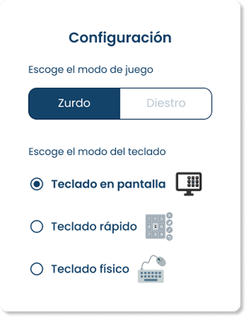
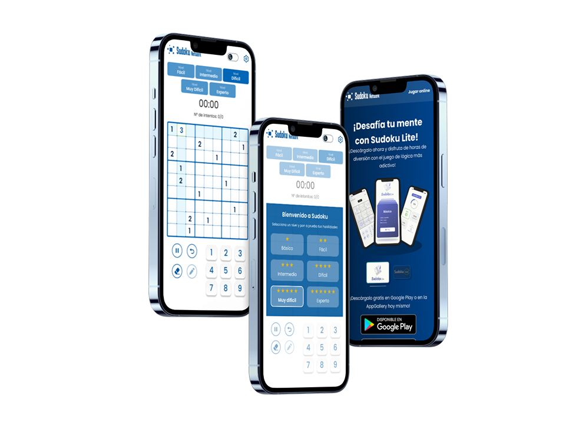
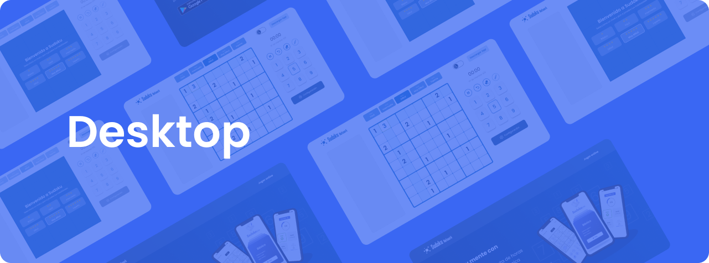
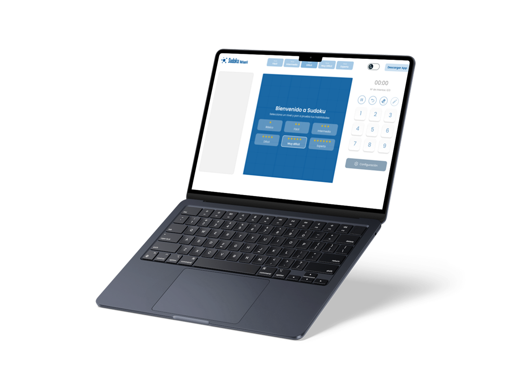

Ofrecer una experiencia de Sudoku envolvente y versátil con una interfaz moderna, atractiva y fácil de usar. La integración de múltiples versiones en una sola plataforma permite un acceso intuitivo y una exploración fluida de nuevas formas de juego.
El mercado de Sudoku está saturado de aplicaciones con interfaces sobrecargadas, publicidad intrusiva y modos de juego fragmentados.
PROCESS
Para entender qué motiva a un jugador de Sudoku, realicé una investigación de modelos de juego y comportamientos de usuario:
Arquitectura
Diseñé una navegación centralizada que permite al usuario explorar nuevas modalidades de juego sin abandonar la partida actual.
Diseño UI
Implementé una interfaz limpia, eliminando elementos distractores y utilizando una paleta de colores optimizada para largas sesiones de juego.
Feedback
Actualicé los modelos de diseño basándome en los hallazgos de las pruebas presenciales, ajustando el tamaño de las celdas y la respuesta visual al completar cuadrantes.





Si tienes alguna pregunta o nesecitas informacion adicional no
dudes en consultarme.
Conversemos
jaimeo25.ui@gmail.com
+51 999153286